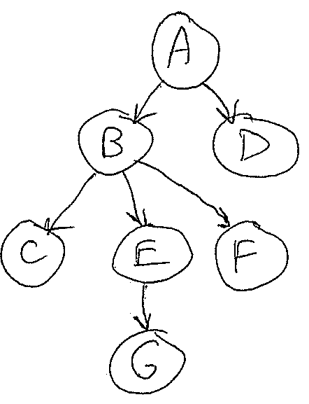
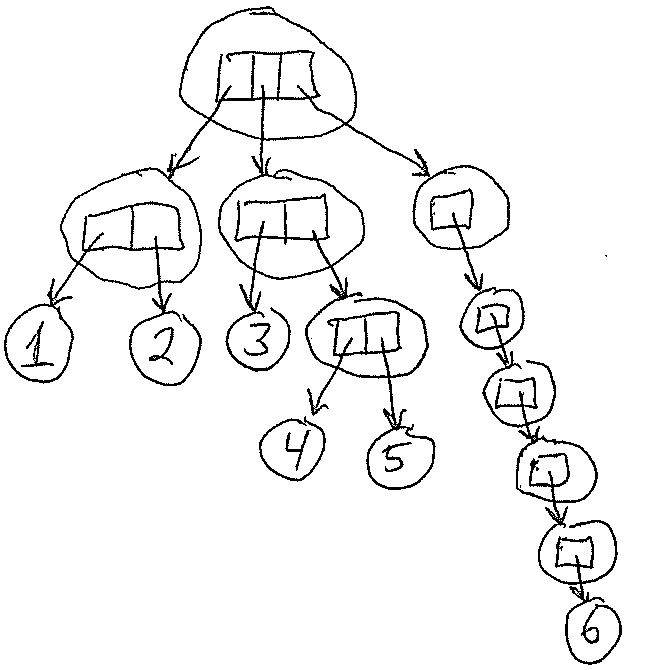

6.101: Recursion and Iteration
Introduction
This reading examines recursion more closely by comparing and contrasting it with iteration.
Both approaches create repeated patterns of computation. Recursion produces repeated computation by calling the same function recursively, on simpler or smaller subproblems. Iteration produces repeated computation using for loops or while loops.
If we can come up with an iterative version, do we need recursion at all? In one sense, no, we don’t need recursion – any function we can write recursively could also be written iteratively. But, some problems lend themselves naturally to a recursive solution. When we try to solve those kinds of problems iteratively instead, we find ourselves simulating recursion anyway, using an explicit agenda to keep track of what we need to do next. For those kinds of problems, it’s more straightforward to express the recursive algorithm directly, letting Python handle the agenda bookkeeping using its call stack.
The converse is also true: any function we can write iteratively, with a loop, could also be written recursively. So, it’s important to be able to think in both ways and choose the one that is most natural and appropriate to the problem we are trying to solve.
This reading looks at the essential equivalence between these approaches and some of their tradeoffs in simplicity and performance. We’ll return to some of the functions we’ve written in previous readings, both recursive and iterative, and show how to write each using the respective other techniques.
Recursion vs. Iteration
Let’s start with the simple example we used in the last reading: factorial. Mathematically, we could have used either of the following definitions of factorial:
or
=
The first definition is recursive, but the second is actually iterative – it doesn’t mention
In terms of code, these definitions translate directly to either a recursive or iterative implementation:
def factorial(n):
if n == 0:
return 1
else:
return n * factorial(n-1)def factorial(n):
out = 1
for i in range(1, n+1):
out *= i
return outWhich of these implementations would you choose? What are the benefits and drawbacks of each approach?
Here are some points of comparison:
- The iterative version might be more efficient because it doesn’t need to create new frames for the recursive calls.
- The recursive version might feel simpler, a better match for the mathematical definition of factorial.
- The two versions might behave differently with illegal inputs, like
For either version, it would be better if the function produced an error right away when it gets an illegal input:
def factorial(n):
assert n >= 0, "need a nonnegative integer"
if n == 0:
return 1
else:
return n * factorial(n-1)The result of factorial(-1) for the recursive version points at an important difference between recursion and iteration in many programming languages (including Python): recursion is limited by a maximum call-stack depth. In Python, this default limit is 1000 calls. When a function tries to call deeper than that, Python produces RecursionError. This limit can be increased using sys.setrecursionlimit(), but it can’t be made unbounded, because the operating system itself puts a limit on Python’s call stack.
List-Like Patterns
The rest of this reading is structured by looking at several common kinds of repeated computation, depending on the shape of the data it is processing: list-like (i.e., a sequence of values), tree-like, and graph-like. We will reach back to previous readings for a recursive or iterative algorithm that we have previously looked at for each of these forms, discussing how we might write the algorithm the other way.
Let’s start with lists. Recall sum_list from the Recursion reading, which we wrote both iteratively and recursively:
def sum_list(x):
sum_so_far = 0
for num in x:
sum_so_far += num
return sum_so_fardef sum_list(x):
if not x:
return 0
else:
return x[0] + sum_list(x[1:])The iterative version naturally uses a for loop.
The recursive version decomposes the list into its first element x[0] and the rest of the list x[1:]. The rest-of-list part is the smaller recursive subproblem. This first/rest decomposition is a very common way to deal with list-like data recursively.
What other recursive decompositions might be natural or plausible for list-like data?
And thinking back to what you learned in 6.100A/L:
- what decomposition does binary search (also known as bisection search) use?
- what decomposition does merge sort use?
We might also imagine a decomposition that takes out the last element x[-1] and then recurses on the prefix of the list before it x[:-1]. This might be the right decomposition for a linear search from the end of the list, for example.
Binary search examines the element in the middle of a sorted list, say m = len(x)//2, and then recurses on either the left part x[:m] or the right part x[m+1:], depending on whether the target element is less than or greater than x[m]. This decomposition might be called middle/left/right.
Merge sort sorts a list by first dividing it into a left half and a right half, recursively sorting each half, and then recombining the sorted sublists by merging them together.
Notice that, in each of these decompositions, the algorithm must be careful to make the recursive subproblems smaller. The first/rest and middle/left/right decompositions do it by peeling off one element of the list (the first or the middle) and excluding it from the recursive subproblems, so that they are definitely smaller than the original problem. This is how these decompositions guarantee that the subproblems are smaller than the original problem, so we will eventually terminate at the base case (which is often, but not always, the empty list).
Accumulating Results Using a Helper Function
One difference between the recursive and iterative versions of sum_list is the order in which they do the summation. Although both versions consider the list elements in order from beginning to end, the recursive version defers any addition until it has reached the end of the list, and then it does the sum backwards. So the computation ends up looking like this:
- iterative version: start with
0, then addx[0], thenx[1], thenx[2], …, finally addx[n-1] - recursive version: start with
0, then addx[n-1], thenx[n-2], thenx[n-3], …, finally addx[0]
The recursive version is saving up the additions for its recombination step, when it combines the results of the recursive subproblems.
But, we don’t have to write it this way. We can write a recursive version that does the addition as it goes, by defining a recursive helper function to which we pass the partial sum computed so far:
def sum_list(x):
def sum_helper(sum_so_far, lst):
if not lst:
return sum_so_far
else:
num = lst[0]
rest = lst[1:]
return sum_helper(sum_so_far + num, rest)
return sum_helper(0, x)The sum_helper function is a recursive helper function. It needs to be a different function from the original sum_list because it has a new parameter, sum_so_far, that keeps track of the partial sum computed so far. The recursive calls steadily add to sum_so_far, until finally reaching the end of the list (the base case), at which point the completed sum is returned as the only result.
The body of sum_list gets the ball rolling by calling sum_helper with an initial value of 0 for sum_so_far (which was the value returned by the base case in the previous recursive version).
Hiding the recursive helper function as an internal function like this is a good idea because it’s only needed inside sum_list.
(It can also help for sharing parameters or local variables that don’t need to change during the recursion, since all the calls to the recursive helper will automatically have access to variables in the enclosing function’s frame, but we don’t have any need for that in this case.)
This example demonstrates a general principle: an iterative loop can be transformed into a recursive helper function, by using parameters to carry the local variables that the iterative loop updates on each iteration.
In the loop in sum_list, the relevant local variable is sum_so_far, and here is how the loop is transformed into the recursive version shown above:
def sum_list(x):
sum_so_far = 0 # becomes initial call to sum_helper(0, x)
for num in x: # becomes num = lst[0], rest = lst[1:]
sum_so_far += num # becomes recursion step sum_helper(sum_so_far + num, rest)
return sum_so_far # becomes the base caseOne trick that makes this pattern even shorter: we can eliminate the helper function sum_helper and instead recurse on sum_list itself, by giving the additional parameters default initial values. That way, the original call initializes the recursion, and subsequent recursive calls update the parameters:
def sum_list(x, sum_so_far=0):
if not x:
return sum_so_far
else:
return sum_list(x[1:], sum_so_far + x[0])Optimizations
List-like recursion in Python suffers from a couple of performance drawbacks:
Every recursive call creates a new frame, and the recursion depth is limited (to 1000 calls by default). For first/rest decompositions, this means that the length of the list that can be processed is similarly limited. (But, for other decompositions, like left-half/right-half, it’s not a limitation at all. Why not? What is the maximum-length list that could be processed with successive halving if you are limited to 1000 recursive calls?)
Every recursive call in a first/rest decomposition needs to copy the rest of the list, using a slice like
lst[1:]. Over the course of the entire computation, all this copying adds up to time proportional to the square of the length of the list. (Why? If the original list has length
Both of these issues can be fixed by clever optimizations:
The recursion-depth limit can be fixed by tail-call optimization. If the recursion is written so that the recursive call is the last thing done in the body of the function – like the line
return sum_helper(...)in the recursive version ofsum_listabove – then this recursive call is called a tail call, coming as it does at the tail end of the work the function has to do. Tail-call optimization means that, when the runtime system encounters a tail call, it deduces that it will no longer need the frame for the current call and can simply reuse it for the new recursive call, rather than creating a new frame. With tail-call optimization, every recursive call tosum_helpersimply reuses the same frame, the recursion depth never exceeds 1, and the performance of the recursive version is essentially like a loop.Tail-call optimization can’t be applied to a recursive call that isn’t at the very end of the function. If
sum_listwere written as we originally had it, withreturn x[0] + sum_list(x[1:]), then this is not a tail call, because the function still needs to do some more work (addingx[0]) after the recursive call comes back. Tail-call optimization is also blocked if the frame needs to be kept for a function object that was created during the call.Python unfortunately does not implement tail-call optimization, but other languages do.
The list-copying problem can be addressed by implementing the list with a linked list (which we will study in detail in a later week) rather than an array, so that the “rest” of a list can be obtained in constant time. Python doesn’t do that, so another way to avoid list copying in Python is to use an index to represent the rest of the list, here called
i:def sum_list(x): def sum_helper(i, sum_so_far) if i >= len(x): return sum_so_far else: return sum_helper(i+1, sum_so_far + x[i]) return sum_helper(0, 0)
Tree-Like Patterns
Having examined sequential, list-like data, let’s turn now to “tree-shaped” data.
A tree is a recursively-defined data structure that starts with a root node, which has zero or more children that are themselves trees (applying the definition recursively). A tree reaches its base case when a node has no children, called a leaf node. Computer scientists normally draw trees growing downward from the root, like this:

The root of this entire tree is the node labeled A, which has children B and D. B in turn has children C, E, and F, and E has one child, G.
The nodes C, G, F, and D are leaves, because they have no children.
As an example of one way that “tree-like” data can appear in Python, recall sum_nested from the Recursion reading:
def sum_nested(x):
"""
>>> sum_nested([[1, 2], [3, [4, 5]], [[[[[6]]]]]])
21
"""
if not x:
return 0
elif isinstance(x[0], list):
return sum_nested(x[0]) + sum_nested(x[1:])
else:
return x[0] + sum_nested(x[1:])Why do we think of the input to sum_nested as tree-shaped? Because each sublist in x is like a node, with children that might be further sublists, until we reach simple numbers, which are the leaves. Suppose x = [[1, 2], [3, [4, 5]], [[[[[6]]]]]] — here is what that looks like when regarded as a tree:

Tree-shaped data have a straightforward recursive decomposition that mirrors the tree structure: we make recursive calls to all children until we reach the leaves.
But, notice that sum_nested as written here is not only decomposing the tree structure recursively but also decomposing the list of children recursively.
To convert this recursive function into an iterative loop, we will reach back to an idea that we used in earlier readings: an agenda. Here, our agenda will keep track of recursive calls that we haven’t made yet. Specifically, each item on the agenda will consist of the parameters for a recursive call. The agenda is initialized with the original list (which we will rename to original_x so that we can keep using x for the rest of the code without confusion), and then, every time we encounter a recursive call to sum_nested(), we put it on the agenda instead, so that it will be handled in a later iteration of the loop. Here is the code:
def sum_nested(original_x):
sum_so_far = 0
agenda = [original_x] # agenda consists of parameters for pending recursive calls
while agenda:
x = agenda.pop(0)
if not x:
sum_so_far += 0
elif isinstance(x[0], list):
agenda.insert(0, x[0])
agenda.insert(0, x[1:])
else:
sum_so_far += x[0]
agenda.insert(0, x[1:])
return sum_so_farWe opted in this iterative implementation to add and remove items at the end of the agenda, so that it explores the tree in the same order that the recursive algorithm does – depth-first. But, we didn’t necessarily have to make that choice – how could we change the code so that the iterative version is traversing the tree breadth-first instead? Either way, it doesn’t matter for sum_nested (addition is commutative, so the numbers can be summed in any order), but for other problems, the order might matter.
Looking at the transformation we just did from the other point of view, there is an agenda data structure hiding inside the recursive version – the agenda is just the call stack, managed by Python, and it is keeping track of the remaining work that needs to be done in the recursive process. So, recursion gives us a convenient and simple way to express a depth-first traversal without having to manage our own agenda data structure.
Graph-Like Patterns
Now that we have explored the equivalence between recursive traversal and iterative (depth-first) traversal using an explicit agenda, let’s go back to graph-traversal problems we explored in earlier readings. A graph consists of a set of vertices and the edges between them. Here is an example of a graph:
So “graph-like” data is data that can be regarded as vertices connected by edges. A tree is actually a special case of a graph (since it also has vertices and edges). But in general, a graph may have multiple paths reaching the same vertex, or it may have cycles (paths that return to the same vertex again), neither of which is allowed for a tree.
In previous readings, we solved graph-traversal problems using iteration, like this flood-fill function:
def flood_fill(image, starting_location, new_color):
# recall that "*location" is equivalent to "location[0],location[1]"
original_color = get_pixel(image, *starting_location)
agenda = [starting_location] # agenda: all of the cells we need to color in
visited = {starting_location} # visited set: all pixels ever added to the agenda
while agenda:
location = agenda.pop(0)
set_pixel(image, *location, new_color)
for neighbor in get_neighbors(location):
if (neighbor not in visited
and get_pixel(image, *neighbor) == original_color):
visited.add(neighbor)
agenda.append(neighbor)Now that we know that we can use the recursive call stack as an agenda, how can we write this recursively? Everywhere we would put a work item on the agenda, let’s make a call to a recursive helper function instead, using the work item as its parameter. This recursive helper function replaces the while loop:
def flood_fill(image, starting_location, new_color):
original_color = get_pixel(image, *starting_location)
visited = {starting_location} # visited set: all pixels ever added to the agenda
def fill_from(location):
set_pixel(image, *location, new_color)
for neighbor in get_neighbors(location):
if (neighbor not in visited
and get_pixel(image, *neighbor) == original_color):
visited.add(neighbor)
fill_from(neighbor)
fill_from(starting_location)Let’s reflect on how we’re using recursion here and think carefully about whether the recursion would actually stop.
What makes the recursive call fill_from(neighbor) a smaller or simpler subproblem?
And what is the base case of the recursion?
Before we make the recursive call to fill_from(neighbor), we first add neighbor to the visited set, so that we won’t visit that pixel again. The graph of pixels we’re trying to fill has effectively become one pixel smaller.
The base case happens when we have no recursive calls to make – when we reach a pixel which is a dead end, because all its neighbor pixels are either not original_color or already visited.
The observation we just made leads to a further observation. For flood fill, we have another guarantee that the recursive subproblem is smaller. What is it?
The fact that every recursive call changes a pixel’s color from original_color to new_color also makes the problem smaller. So, we actually don’t need a visited set when we solve flood fill recursively!
def flood_fill(image, starting_location, new_color):
original_color = get_pixel(image, *starting_location)
if original_color == new_color:
return # nothing to do
def fill_from(location):
set_pixel(image, *location, new_color)
for neighbor in get_neighbors(location):
if get_pixel(image, *neighbor) == original_color:
fill_from(neighbor)
fill_from(starting_location)When To Use Recursion and When To Use Iteration
How might you decide to use recursion?
- When the problem is easy to express recursively (as factorial)
- When the data itself is defined recursively (like a tree often is)
- When depth-first traversal is fine
- When the recursion won’t get too deep (this constraint may be relaxed for programming languages other than Python)
Recursive solutions are often shorter and simpler, by moving agenda bookkeeping into the programming language rather than representing it explicitly.
As you gain comfort with recursion, you may find that a recursive solution is easier to express at first, because of natural decompositions (like first/rest, or left-half/right-half, or recursing into children or graph neighbors). So, it may be good to start with a recursive approach and then convert it to an iterative algorithm (using one of the strategies here) if you run into problems like recursion depth limits or excessive copying.
Common Mistakes in Recursion
Here are three common ways that a recursion can go wrong:
- The base case may be missing entirely, or the problem needs more than one base case, but not all the base cases are covered.
- The recursive step doesn’t reduce to a smaller subproblem, so the recursion doesn’t converge.
- Aliases to a mutable data structure are inadvertently shared, and mutated, among the recursive calls.
We saw the first two issues in an exercise above, when we tried to convert sum_list to use a left/right decomposition. When the subdivided list reached length 1, the decomposition was no longer able to make two smaller subproblems, so we needed to make that into a new base case.
Aliases to mutable data are sometimes necessary in recursion, as we saw above when we shared the visited set across all calls in a recursive traversal of a graph. For flood fill, of course, sharing the mutable image is necessary because the whole point of the recursion is to fill in more pixels. But, when you are doing a recursive depth-first search without a visited set (which, as we saw with flood fill, is often possible when a move in the search automatically makes the problem smaller or simpler), it can be tempting to keep the search state mutable. This becomes tricky, because then multiple pending recursive calls have aliases to the same mutable state. We will see an example of this in the next reading, when we use recursive search to solve Sudoku puzzles.
Look for these mistakes when you’re debugging. A RecursionError is a sign of the first two. The third bug can be harder to spot, because it’s fundamentally an aliasing bug.
Summary
We have explored several kinds of problems, based on the shape of the data or repeated computation that needs to be done (list-like, tree-like, graph-like), and have seen how to do the repeated computation both recursively and iteratively.
Along the way, we’ve seen more strategies for thinking recursively, including:
- recursive decompositions that are commonly used for list-like data (first/rest, left-half/right-half), tree-like data (recursing into children), and graph-like data (recursing to neighbors);
- using a recursive helper function with parameters that accumulate partial results;
- using recursion for a depth-first traversal of a tree or graph.